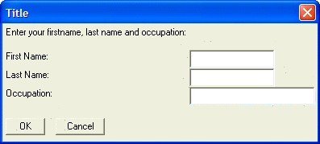
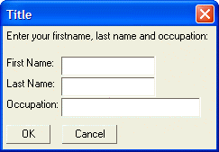

{CELLSPILLOVER}
Syntax
{CELLSPILLOVER= Switch }
|
Argument |
Type |
Description |
| Switch |
C |
"on" = Enable cell spillover. "off" = Disable cell spillover. |
Description
The {CELLSPILLOVER} function allows you to dynamically reposition Xdialog controls to the prior cell on a row.
Supported By
Alpha Five Version 5 and Above
Limitations
Desktop applications only
Example
The following examples show how the {cellspillover} command can change the appearance of an Xdialog.
|
result=ui_dlg_box("Title",<<%dlg% Enter your firstname, last name and occupation: ; {lf}; First Name:{sp}|[.20firstname]; Last Name:{sp}|[.20lastname]; Occupation:{sp}|[.30occupation]; {lf}; <&OK> %dlg% ) |

|
result=ui_dlg_box("Title",<<%dlg% {cellspillover=on} Enter your firstname, last name and occupation: ; {lf}; First Name:{sp}|[.20firstname]; Last Name:{sp}|[.20lastname]; Occupation:{sp}|[.30occupation]; {lf}; <&OK> %dlg% ) |

See Also